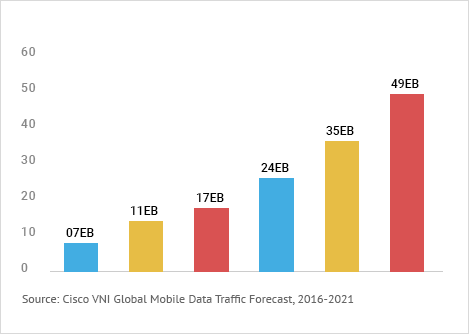

The cellular networks have to increase capacity significantly to meet this demand. Subscribers and mission critical applications demand ubiquitous network access. Service providers need a solution that fills gaps in their coverage and add capacity in population centers and activity centers.
Frustrating user experience due to dead cell zones
Frustration of dropped calls while driving
Flattened data revenues with unlimited Data Plans
However deploying small cell networks comes with its own set of challenges - capital investment, design, technology selection, integration and security.
Global Mobile Data Traffic Growth Forecast
Increased mobile phone users
Mobile Video Browsing
4G Video Streaming
Internet of things (IOT)
While small cell networks in the licensed spectrum help solve some of the coverage issues, carrier grade Wi-Fi solution is increasingly becoming a popular and less expensive way to add capacity and cover dead zones for small area population centers and activity centers. From downtown business districts to public arenas to high school parking lots or even inside warehouses and factories, devices can seamlessly switch between LTE networks and Wi-Fi automatically.
Integrating different access networks to the cellular core introduces security issues. The threats come from both sides of the network - the devices that access the network on one side and the Internet on the other side. Trilogy’s Holistic security approach evaluates security threats continuously.
Small cells are the fundamental building blocks for 5G architecture. Investing in small cells today is a strategic path for transition to 5G.
Call us to learn more